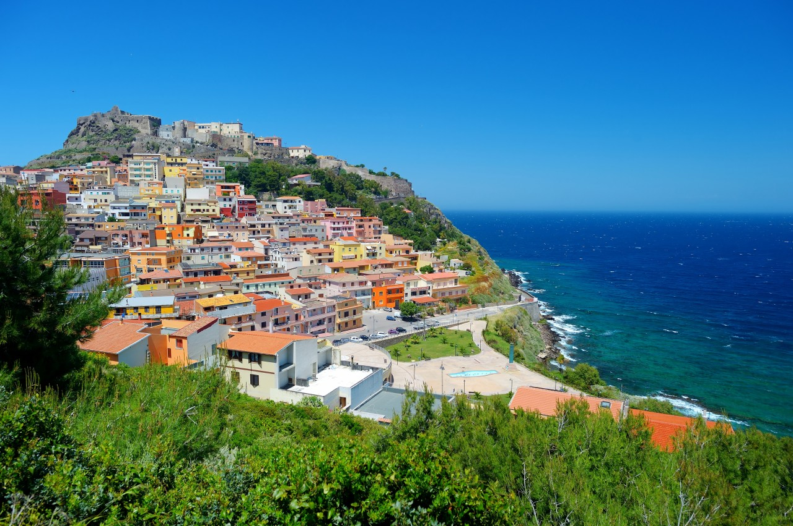
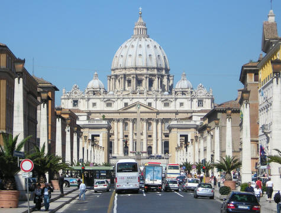
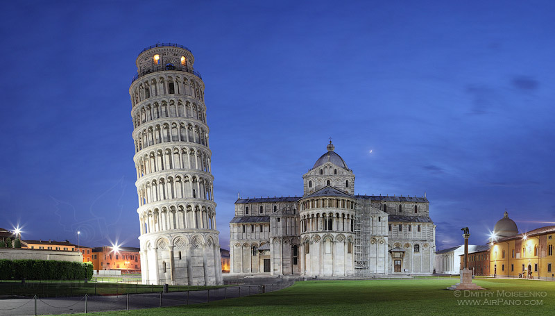
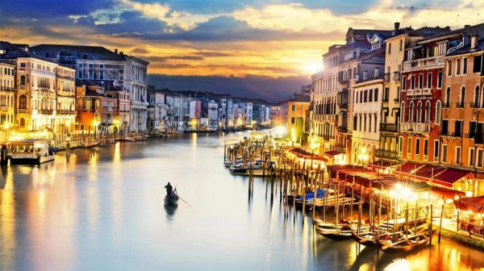
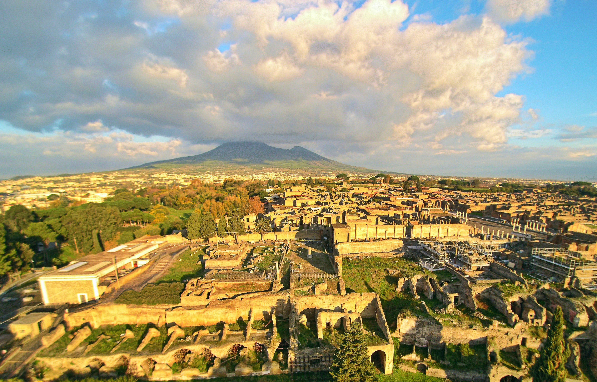
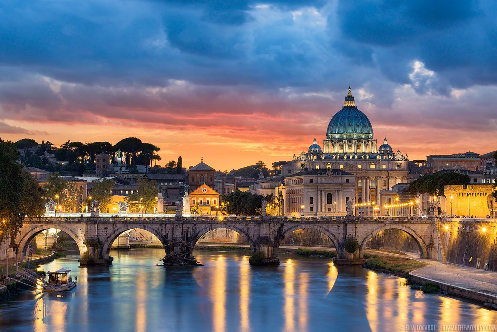
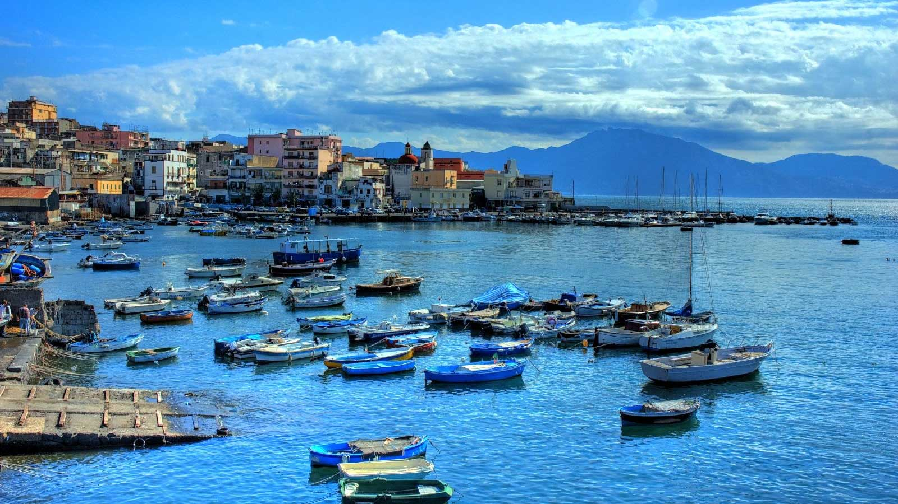
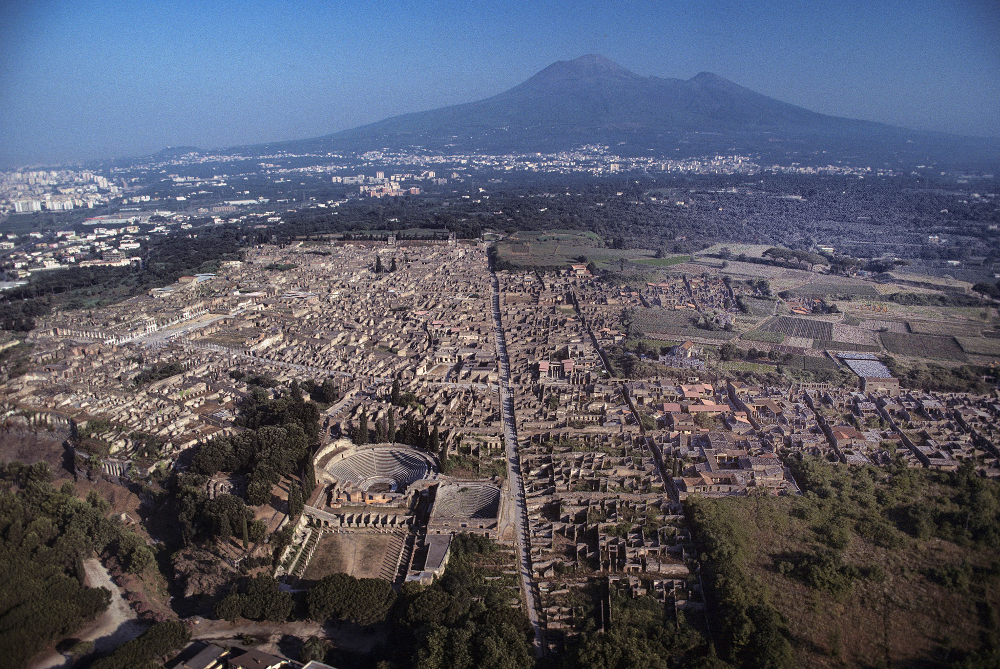
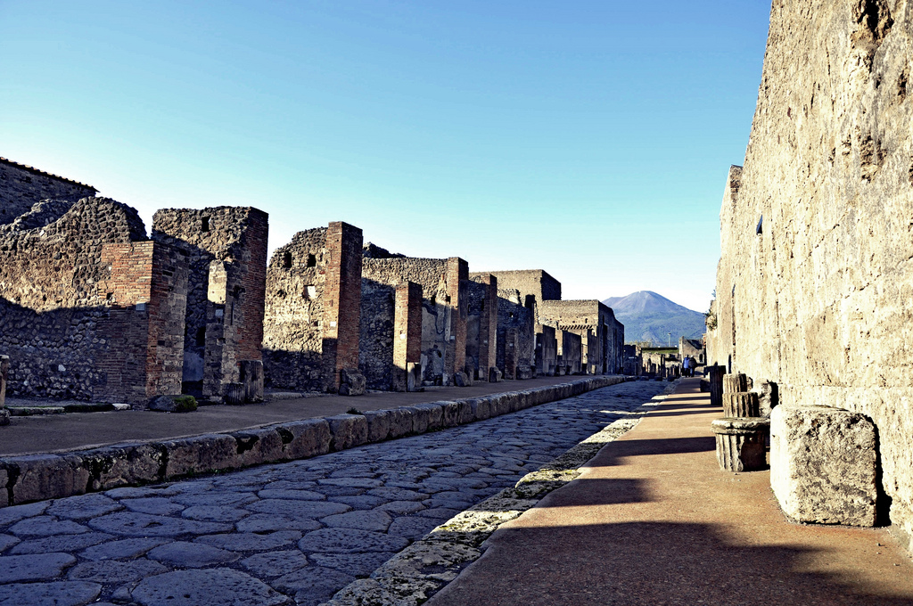
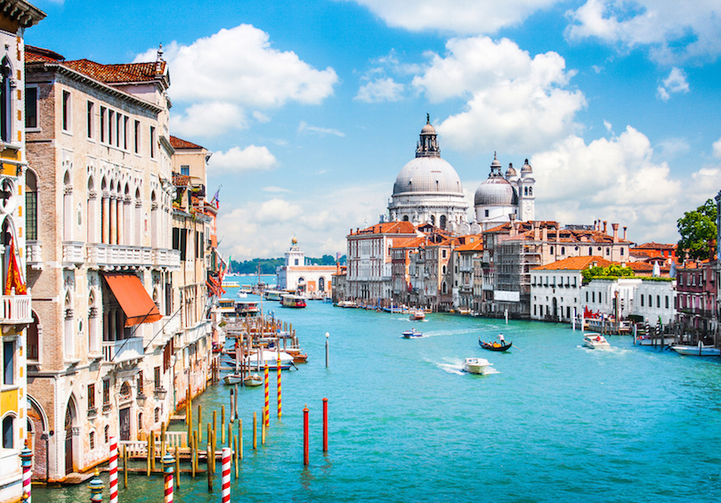

3 Best Places to Visit in Italy

Pompeii
One of Italy 's most visited tourist destinations, Pompeii is a famous Roman city which was buried under several feet of volcanic ash for nearly 1,700 years after the cataclysmic eruption of Mt. Vesuvius. Excavation of Pompeii began in 1748, and the site is yet to be totally unearthed. The site is located near the modern city of Naples. A tour of Pompeii offers a fascinating insight into the everyday life of the ancient Roman world. Visitors can walk along the ancient streets to see the remains of bakeries, brothels and baths.
Venice
One of the best places to visit in Italy, Venice is a unique city in that is built upon a lagoon surrounded by the Adriatic Sea. Located in northeastern Italy, Venice is an archipelago of 118 islands all connected by hundreds of beautiful bridges and scenic canals. Of the canals, the Grand Canal is most famous and divides the city into two sections. Picturesque waterways and historic architecture make Venice one of the most romantic cities in the world. Venice is often crowded but well worth visiting to see its magnificent landmarks like Saint Mark Square and Basilica, Doge Palace and Rialto Bridge. One of the most popular things to do is to take a gondola ride along one of its many canals.
Rome
Formerly the capital of the Roman Empire, Rome today is the government seat and capital city of Italy. Located in the country is central region of Lazio, Rome is a vast and complex city that is both historic and modern at the same time. Best known for housing ancient Roman structures and the Vatican City, Rome has endured for more than 2,500 years as an important center for culture, power and religion. From ancient romantic plazas to stunning cathedrals and Renaissance architecture, there is so much to see and do in Rome, that it could take months or even years to see it all.